The story of the Global AI Community that spans every continent
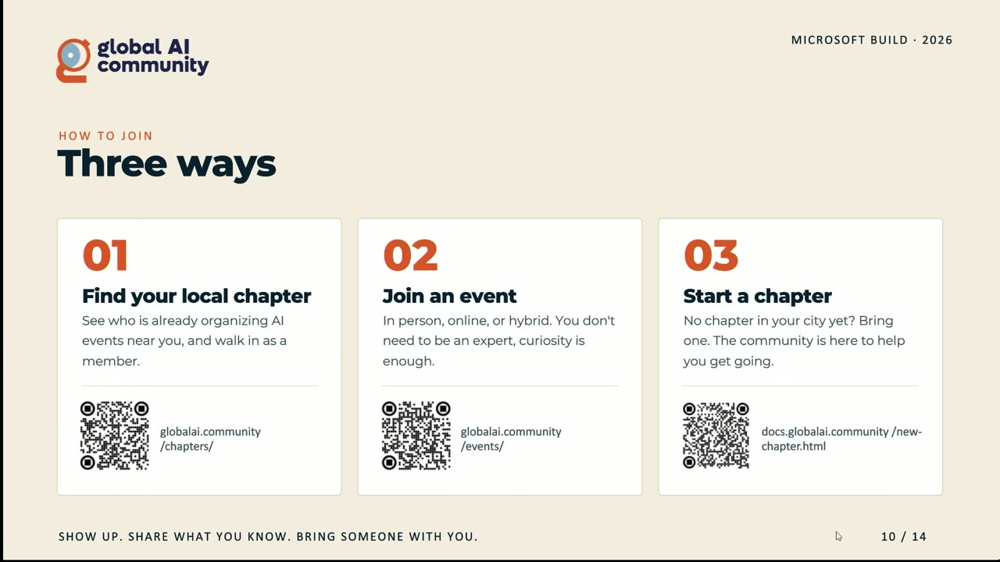
Official description
What starts with a few people passionate about AI becomes a worldwide movement. Global AI Community grew from nothing into thousands of members, hundreds of events, and chapter leads on every continent, all volunteer-run, all free, all real. In this session, hear directly from chapter leads about why they joined, what they built, and what community means to them. Plus: how to find your local chapter, start your own, and become part of something bigger than your time zone. Seating for this session is first-come, first-served. Add it to your schedule to plan your day and arrive early to secure a spot.
Summary
Overview
A non-product session tracing the origins and structure of the Global AI Community, a volunteer-run, free, vendor-neutral network of local chapters that has grown since 2017 into roughly 200 chapters and over 200,000 members. The talk explains how chapters operate, the event formats the community runs worldwide, and the concrete steps for attendees to join, lead, or start a chapter.
Key announcements
- Community scale milestones [00:02:36m05s
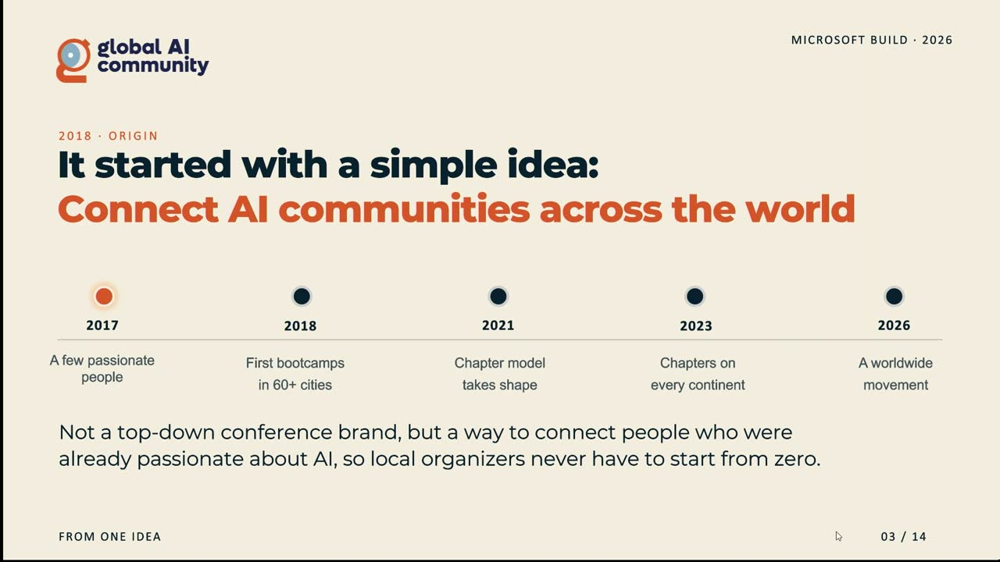
m10s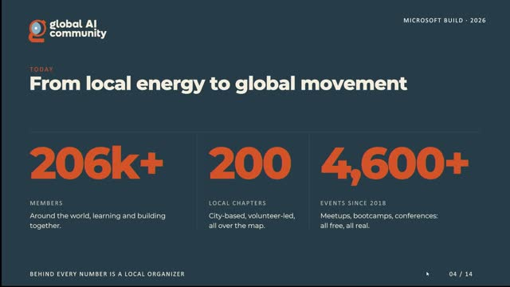
p05s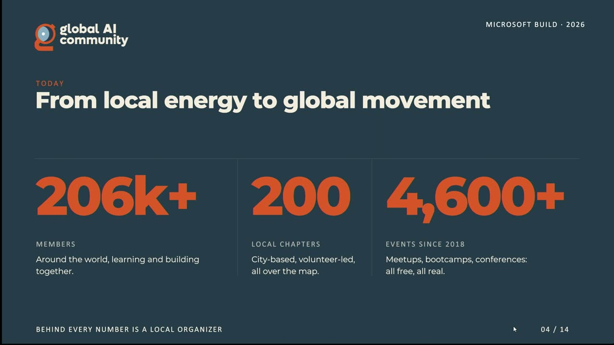
p10s] — The Global AI website now lists over 200,000 registered members, around 200 chapters worldwide, and more than 4,600 events run since 2018. - Agent Camps as the flagship hands-on event [00:07:01m05sm10sp05s
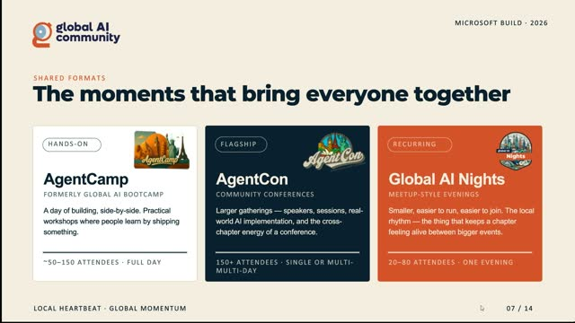
p10s] — Formerly known as the Global AI Boot Camps, these workshop-focused events (typically up to 150 people) run across roughly 70 countries during a roughly three-month window from February to April. - Agent Cons as the large conference format [00:07:56m05sm10sp05sp10s] — Bigger conference-style events drawing international speakers, ranging from 150 to nearly 1,000 attendees, including a Mountain View edition on May 4th with about 400 people and speakers from AWS and Google.
- Over 100 Agent Camps in three months [00:16:05
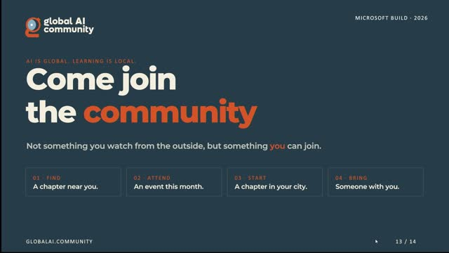
m05sm10sp05sp10s] — The community ran more than 100 community-organized Agent Camps in about three months, supplying organizers with speaker decks, workshops, and occasional Azure credits. - Table talk and expert booth at Build [00:17:35m05sm10s
 p05sp10s] — A table talk was scheduled for 9:30 AM the following day, with the team also available at an expert booth across the two conference days.
p05sp10s] — A table talk was scheduled for 9:30 AM the following day, with the team also available at an expert booth across the two conference days.
{kind=link}
{kind=link}
{kind=link}
{kind=link}
{kind=link}
{kind=link}
{kind=link}
{kind=link}
{kind=link}
{kind=link}
{kind=link}
{kind=link}
{kind=link}
{kind=link}
{kind=link}
{kind=link}
{kind=link}
{kind=link}
{kind=link}
Topics covered
- Origins of the community in 2017 and its growth through the 2018 boot camp wave and the COVID period.
- The "community up" rather than "top down" organizing philosophy and trust placed in local organizers.
- What defines a chapter: city-based, at least two co-leads, and at least one in-person event every three months.
- Event formats: Agent Camps, Agent Cons, and Global AI Nights (virtual, hybrid, and in-person).
- Support provided to chapters: branding, templates, platforms, a weekly newsletter, a YouTube channel, and credibility.
- Three paths to involvement: join a local chapter, attend an event, or start a new chapter via a form and onboarding call.
- Steps and cautions for starting a chapter, including why a co-organizer is essential.
- Cross-chapter collaboration, such as sharing speaker connections between cities.
- Vendor neutrality — relevance to Google and AWS practitioners, not only Microsoft.
Notable quotes
"It's not like a top down brand. We are community up. So we really care about the community."
"If you just have a laptop and curiosity, you can build labs. So go ahead and join the local chapters and be a part of it." — Stephen Simon
"You learn by doing, not just by watching."
Products and tools mentioned
- Global AI Community website (globalai.community)
- Discord
- Azure (credits for organizers)
- YouTube
- SharePoint
- AWS
Speakers featured
- Roelant Dieben [inferred] — cloud architect and Global AI Community board member
- Stephen Simon — Global AI Community program/community manager, based in India
- Hank Goldman [inferred] — founder of the Global AI Community (referenced, not present)
- Sami [inferred] — board member (referenced, not present)
Follow-up resources
- Global AI Community website: globalai.community
- Events listing: globalai.community/events
Frames
{kind=link}
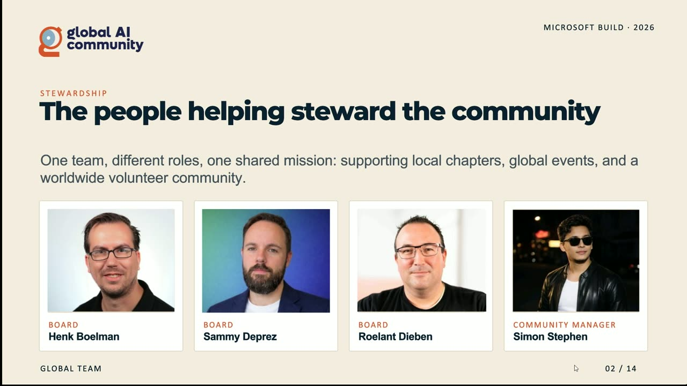
{kind=link}
{kind=link}
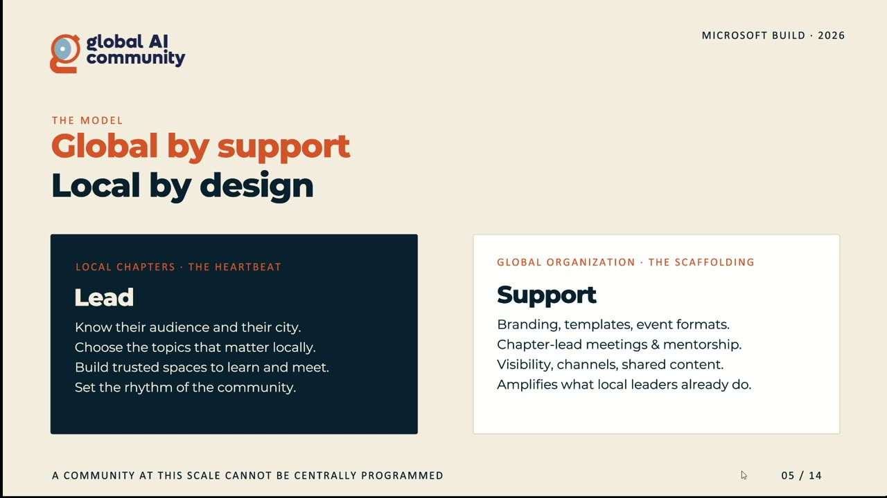
{kind=link}
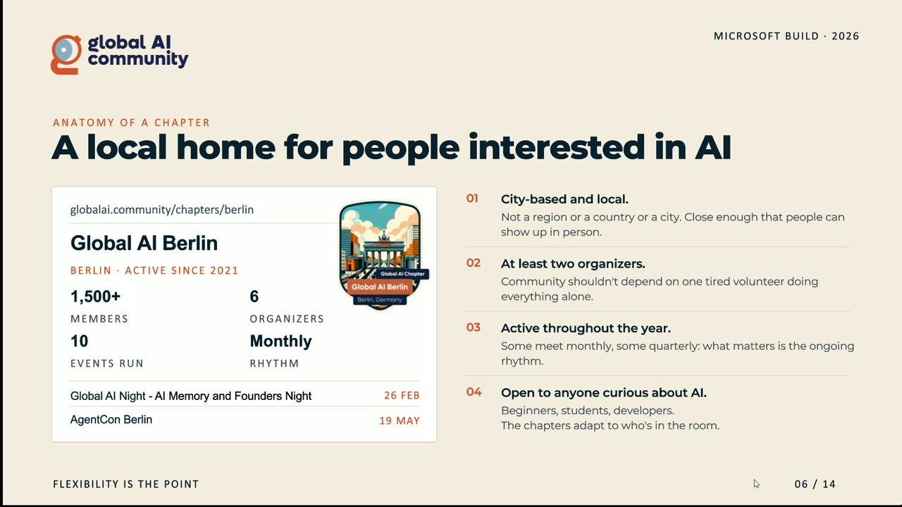
{kind=link}
{kind=link}
{kind=link}
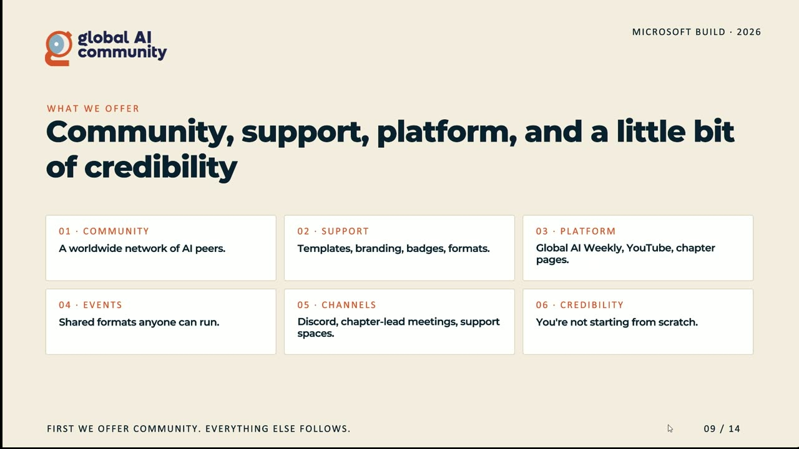
{kind=link}
{kind=link}
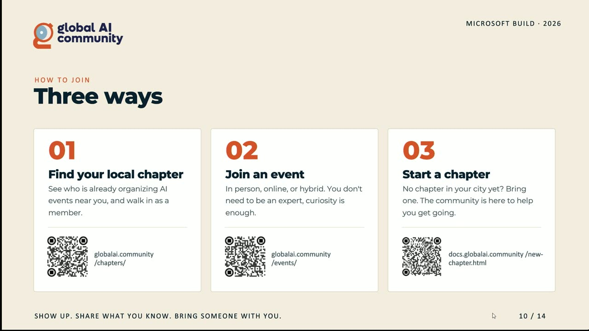
{kind=link}
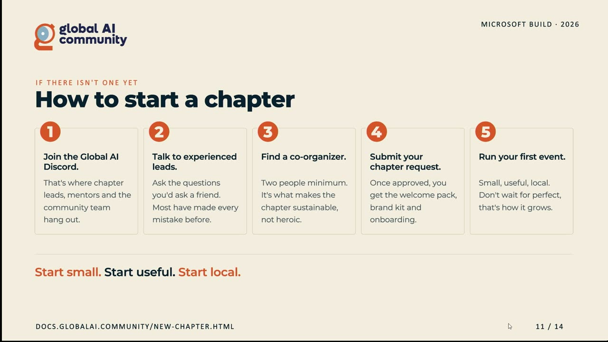
{kind=link}
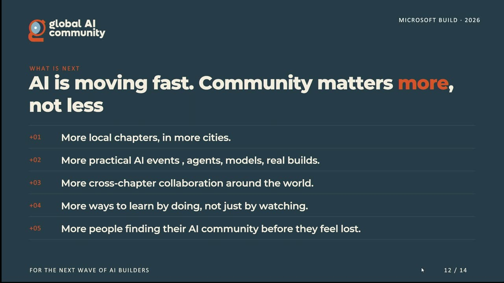
{kind=link}
{kind=link}
{kind=link}
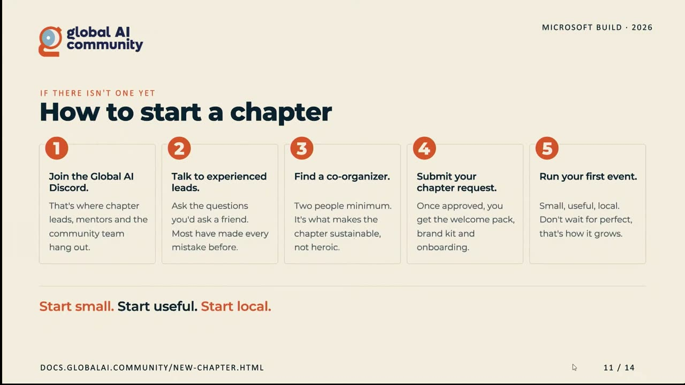
{kind=link}
Transcript
Show / hide transcript (29,792 chars)
[00:00:00] Thank you so much for being here. [00:00:01] I'm Ullans, I'm cloud architect by day. [00:00:04] I am global AI Community Board member by night. [00:00:08] And we're I'm here joined here by Simon. [00:00:10] I'm based on the Netherlands Simons from India. [00:00:12] Simon is our global AI community manager, which we really [00:00:16] love. [00:00:16] And this is a different story. [00:00:18] This is not a demo. [00:00:19] This is not a product launch. [00:00:20] This is what is the global AI community. [00:00:22] So how it all started, what we're doing on a [00:00:25] daily basis for our chapters, how we're organized, and especially [00:00:29] how you can be part of this as well. [00:00:31] Because we are a huge community, we're growing and we [00:00:34] love to have more people join us as well. [00:00:38] But Simon, would you be able to introduce our team? [00:00:41] Yeah, I think that's a good slide to start with. [00:00:44] So on our board we have Hank Goldman. [00:00:47] Hank is that is the one who actually started the [00:00:50] Global Air community. [00:00:52] Gulan is going to attend in the next slides when [00:00:54] and when right more story about that. [00:00:56] But Hank is the one who started it. [00:00:58] And then on the board we also have Sami and [00:01:00] we have Gulan. [00:01:01] And then its myself, I work as a program manager [00:01:04] at Global I Community. [00:01:06] But but this community is more about just these four [00:01:08] people. [00:01:09] You know its about the chapter lead speakers, community members, [00:01:13] volunteers and that is what exactly we are going to [00:01:16] cover in next about 25 minutes. [00:01:18] Yeah, Simon is going to talk more numbers later in [00:01:21] the presentation. [00:01:22] Some big numbers. [00:01:23] So if you look back how it all started, it [00:01:25] all started in 2017. [00:01:26] So we're talking AI was cool, but there was no [00:01:29] Gen. [00:01:29] AI insight. [00:01:30] So people were learning differently. [00:01:32] They were not organized as much as as we see [00:01:36] now. [00:01:37] There were some meetups available that really depended on the [00:01:40] city and how they were organized. [00:01:41] So some cities did a very good job, had some [00:01:44] excellent meetups going there with excellent speakers. [00:01:48] Other were just figuring it out and had a lot [00:01:50] of students, which is of course great. [00:01:52] The more students the better. [00:01:54] But if we're not having that many events and it [00:01:58] was just a different time to be in. [00:02:00] So in 2018, we started in 20/17/2018, was our first [00:02:04] big wave of boot camps and we have more on [00:02:07] the events later. [00:02:08] And then it just grew and grew. [00:02:10] And of course, we had COVID in between, but we [00:02:13] still remain growing until the community that we're currently now. [00:02:17] So it's not like a top down brand, top down [00:02:20] brand. [00:02:21] We are community up. [00:02:23] So we really care about the community. [00:02:25] We all do this on the side extra for Simon [00:02:28] because he is our dedicated driving factor behind this community. [00:02:35] What numbers? [00:02:36] Yeah. [00:02:36] I mean, we have, we start, we had a very [00:02:39] humble beginning, but if you visit the Global AI website [00:02:42] now, we have over 200,000 members registered on the platform. [00:02:46] We have chat around 200 chapters around the world. [00:02:50] And from 2018, we have done more than 4600 events, [00:02:53] which you know, which I think is incredible. [00:02:57] And you know, and the best part about these events [00:03:01] and this community is they are locals, right? [00:03:04] They are local chapter leads who organize events, you know, [00:03:07] in, in their cities, right? [00:03:09] They come together to share their experiences and, you know, [00:03:14] they're learning. [00:03:15] So yeah, we're growing, right? [00:03:17] And if you want to find any city, right, if [00:03:20] you live in any city, you can go to Global [00:03:22] Aid or Community and find a city there and be [00:03:25] a part of that chapter. [00:03:27] Yeah, it's also I have warned it later more on [00:03:29] the process, how people can join, how people can start [00:03:32] and to really get going and and build out this [00:03:34] community. [00:03:37] So our organized and we firmly believe in this, this [00:03:40] is one of the most important messages we we try [00:03:43] to get across. [00:03:43] We firmly believe in local chapters because these local chapters [00:03:47] really understand their own community, because every community worldwide has [00:03:51] different different needs, are at a different building at a [00:03:54] different pace, are at a different stage of adapting AI. [00:03:57] So these local communities know if they need more training, [00:04:00] if they need more hands on workshops, if they need [00:04:03] more boot camps. [00:04:04] So we really believe in the local characters. [00:04:09] So these local organizers are fully trusted and I should [00:04:12] not stand there. [00:04:14] We fully trust them. [00:04:15] So they have all the the leeway that they want [00:04:18] and still have our support. [00:04:19] Because of course you can't run this community at Skill [00:04:22] if you do not support these local chapters, if you [00:04:25] have not the the same story you're putting across. [00:04:29] So with all those voices, we still have the same [00:04:31] message we try to get across and there are so [00:04:34] many things we do to support them, but we'll talk [00:04:37] on that later as well. [00:04:41] Yeah, chapters, right. [00:04:43] So we have mentioned about chapters a couple of times. [00:04:45] So let's quickly look what a chapter really is about, [00:04:48] right? [00:04:49] So as I said, moments back chapter are locals, it [00:04:52] means they are city based. [00:04:54] Now this really allows for a local community to get [00:04:57] together right? [00:04:57] Share the experiences and learning right. [00:05:00] So I highly encourage everyone you know to go ahead [00:05:02] on the globally I website and find a city. [00:05:04] If it is, is there. [00:05:05] If it is not, well tell you what you can [00:05:07] do, right? [00:05:07] That's number one that all the chapters on globally are [00:05:10] local, right? [00:05:11] And we highly encourage that every chapter has at least [00:05:16] 2 chapter leads, at least a Co organizer. [00:05:19] Because running a chapter is not easy, right? [00:05:22] It takes a lot of work, right? [00:05:24] You have to find a venue, look for speakers, then [00:05:27] volunteers and sometimes all the sponsors, right? [00:05:29] So it can be a lot of work. [00:05:31] So that's why we encourage that every chapter has at [00:05:34] least 2 organizers. [00:05:35] And to make sure that the community is active, we [00:05:38] encourage chapter leads to organize at least one in person [00:05:42] event in three months. [00:05:44] You know, there are different formats of events that chapter [00:05:46] leads can organize. [00:05:47] It can be virtual, hybrid and or in person. [00:05:51] But we highly encourage that you organize at least one [00:05:54] in person event in three months. [00:05:56] And the best part is that is it is open [00:05:58] to anybody. [00:05:59] And in fact, as you know, we learn moving more [00:06:01] into AI, it has really lowered down the barrier to [00:06:04] get into this development and all. [00:06:06] If you just have laptop or and curiosity, you can [00:06:08] build labs. [00:06:09] So go ahead and join the local chapters and be [00:06:13] a part of it. [00:06:14] Yeah, definitely. [00:06:15] And of course, it really helps to get your rhythm [00:06:18] going. [00:06:18] So we, this is like the bare minimum, right? [00:06:21] One event every three months. [00:06:22] I mean, we like the stuff, we like talking, we [00:06:25] like learning about AI. [00:06:26] So we highly encourage to have like a monthly meet [00:06:28] up just to build that local community and get people [00:06:31] to get it. [00:06:32] And a big shout out to our Berlin chapter, which [00:06:34] is one of our best chapters and not, I mean, [00:06:37] we have 200 of them, but the Berlin chapter is, [00:06:39] is one of our older chapters and is really, really [00:06:42] doing a good job with their with their events. [00:06:45] And Speaking of events, we have a couple of events. [00:06:48] So we're organized with those local chapters. [00:06:51] So these chapters organize all these things, but are a [00:06:53] couple of moments each year when we all come together [00:06:56] and not physically, but we have like the same eventually [00:06:59] one as these local chapters. [00:07:01] And our agents camps for the people who formerly maybe [00:07:06] knew them as the global AI boot camps is kind [00:07:09] of our flagship events, not that big. [00:07:12] I mean, they can take many forms and sizes, but [00:07:15] they're usually up to like 150 people. [00:07:17] And it's really about the hands on learning really to [00:07:19] get started, to have a couple of workshops in there [00:07:22] to really start building with AI and show people what [00:07:25] you actually can do with this AI and with these [00:07:27] agents. [00:07:28] And so really hands on. [00:07:29] And of course, there's also sessions and other things going [00:07:32] on as well. [00:07:33] But we do this worldwide across many different countries. [00:07:36] I think it's like 70 countries, right, that we run [00:07:38] these events. [00:07:40] It is amazing. [00:07:41] And it's so good to see because during these event [00:07:43] periods, and it's usually like a couple of weeks for [00:07:46] the agents camps, it's a couple of months and we [00:07:49] have all these nice event updates and these pictures coming [00:07:52] in. [00:07:52] And we try to do a good job to to [00:07:54] support those agent camps. [00:07:56] And then we also have our agent cons. [00:07:58] And maybe you visited an agent cons in a city [00:08:00] near you. [00:08:01] But these are our bigger events. [00:08:02] They look like more like conferences, usually more than 150 [00:08:07] people. [00:08:08] And there are many conferences up to really big conferences. [00:08:11] So we have have agents cons with up to almost [00:08:14] 1000 people and maybe in India even more. [00:08:18] Yeah, that's crazy. [00:08:18] So those are huge events that draw in international speakers [00:08:23] with learning about AI and learning how to do this [00:08:28] stuff. [00:08:29] And then we have the global AI night. [00:08:30] So this is more the general format. [00:08:31] So we see a lot of these communities, local chapters [00:08:34] running these global AI nights, which is a meet up [00:08:36] feel. [00:08:36] So that can take many forms of sizes. [00:08:39] And especially when you're just getting started. [00:08:41] I mean, everything goes right. [00:08:42] If if you're there and you have a laptop and [00:08:45] you maybe you all bring something to eat or you [00:08:47] order some pizza and you just have a good time [00:08:50] learning from each other and building that community during those [00:08:54] global AI nights. [00:08:55] So nothing is enforced here, but we were highly encourage [00:08:58] chapters to organize at least the agents can come. [00:09:01] So to start there. [00:09:04] And there are a couple of things we also support [00:09:06] there. [00:09:07] And in the end, it's all about the community, right? [00:09:09] And it sounds like like purely logical and well, but [00:09:14] it is. [00:09:15] If you look at our community and our community structure, [00:09:18] if people don't want to get started, they join one [00:09:20] of our channels. [00:09:21] So they go to Discord, they visit an event and [00:09:24] they get to talk to the chapter leads to the [00:09:26] people there. [00:09:28] Yeah, maybe they'll find their chapter, maybe start their own [00:09:31] chapter. [00:09:31] So it's really about the community, helping each other to [00:09:35] or grow this community further. [00:09:37] And we offer them a lot of support. [00:09:39] So things like things to get you started, things like [00:09:42] templating, branding, platforms. [00:09:44] So we have a lot of platforms. [00:09:46] We have a newsletter we put out every week. [00:09:49] We also have a YouTube channel almost 50,000. [00:09:52] So like you subscribe now, but we have some platforms [00:09:57] we can provide our chapters to, to voice their their [00:10:02] sessions to voice their community. [00:10:05] And of course, we talked about the events, we talked [00:10:07] about the channels and in the end, we provide some [00:10:09] credibility. [00:10:10] I mean, we've existed now for nine years, right? [00:10:12] So it's a community, it's a community of of size. [00:10:16] So if you're just getting started, you're joining this this [00:10:19] already train that is going that is left the station [00:10:23] and is growing and getting bigger by the day all. [00:10:28] Right, so there are three ways on how you can [00:10:30] get involved with the Global Air community. [00:10:32] Number one is to find a local chapter, right? [00:10:35] So we have local chapters in 200 different cities across [00:10:39] the world. [00:10:40] So if there's one in your city, please go ahead [00:10:42] and join it. [00:10:43] That is one way to get involved with the global [00:10:45] Air community. [00:10:46] The second way is if there's any event happening, right? [00:10:48] So as Ron mentioned about the agent camp, you don't [00:10:52] even have to be a chapter lead to we organize [00:10:55] an agent camp. [00:10:56] So if you go to global I dot community slash [00:10:58] events, right, you will find many, many events happening across [00:11:02] the world. [00:11:02] So you can join one of those events. [00:11:04] It can be in person, hybrid or also virtual and [00:11:07] then build connections from there. [00:11:08] And then maybe join a chapter that is near to [00:11:11] your city. [00:11:12] And if you do not find any chapter in your [00:11:14] city, you could be the chapter lead, right? [00:11:17] You can start a chapter in your city, right? [00:11:19] You just have to fill out a form. [00:11:21] Then you get on a call with the Global AIHU [00:11:24] team. [00:11:25] We love to know about who you are, you know, [00:11:27] what are your expectations from the chapter. [00:11:29] And then we give you all the content. [00:11:31] We have a very nice onboarding e-mail through the process. [00:11:35] And then you can start your own chapter in your [00:11:37] city and then, you know, start building the community in [00:11:39] your region. [00:11:40] So those are three very easy ways to get involved [00:11:43] with the Global AI community. [00:11:45] Yeah, and even if there's a chapter there, then reach [00:11:47] out to the current chapter leads exactly. [00:11:49] See if you can help out, see if you can [00:11:52] join the existing chapter to grow and to be better [00:11:55] there. [00:11:57] So there are several steps to start a chapter and [00:11:59] it's not hard. [00:12:00] The first one is look, if there's a chapter there, [00:12:03] so we mentioned this a couple of times. [00:12:05] We don't want competing chapters. [00:12:06] That does not make any sense in a region. [00:12:09] So if there's a chapter there, again, reach out to [00:12:11] the the local organizers already there. [00:12:13] But if it is not, then join first step, join [00:12:16] our discord. [00:12:17] So reach out to the chapter organizers that are there. [00:12:20] How are you getting started? [00:12:21] What, what should I do next? [00:12:22] What should I've prepared? [00:12:24] And then of course, we have an onboarding process that [00:12:26] will help you as well. [00:12:27] So that was Step 2. [00:12:28] Talk to experience please. [00:12:30] Very important. [00:12:31] Simon mentioned this. [00:12:32] You cannot do this alone. [00:12:33] You have to have a Co organiser. [00:12:36] And why? [00:12:36] Because we've seen it fail. [00:12:38] I mean people are very enthusiastically starting their chapter. [00:12:44] But then again, as Simon mentioned, it's hard work. [00:12:47] You're going to do this frequently, you're going to do [00:12:49] this every month. [00:12:50] You have to find sponsors, you have to find locations, [00:12:52] you have to find speakers and one or two is [00:12:55] not that hard. [00:12:55] But if it's you're going to your third event, your [00:12:58] 4th event, maybe you're doing this for three years, maybe [00:13:01] something happens so you need a second organiser or even [00:13:05] more. [00:13:05] I mean, there are chapters with more than two organisers, [00:13:07] Totally fine. [00:13:09] And then if you've done all that, then submit your [00:13:12] request and then, well, sometimes be patient. [00:13:15] I mean, we have to approve it, right? [00:13:17] We have to go through the works. [00:13:18] We have to find out, are these people really interested [00:13:21] in starting this chapter? [00:13:23] What is your motivation? [00:13:24] How can we help out? [00:13:25] So it's really about supporting you. [00:13:27] And if you want to approve, we sent you all [00:13:29] the materials and you're, you're good to get started. [00:13:32] So to get started with running your first event, maybe [00:13:36] do something hybrid or do something virtual first or it [00:13:40] mean it's up to you. [00:13:42] Again, we highly encourage in person defense. [00:13:44] We really believe in building communities in person and getting [00:13:47] together there. [00:13:50] And so what's next, you know, as, as AI is [00:13:52] moving fast and I said in the beginning, right, the [00:13:55] barrier, you know, to to be in the, the community [00:13:57] has really come down, right? [00:13:59] So we really need more local chapters, more leaders like [00:14:03] you, right, who want to start the community in their [00:14:06] region, right, and do more events that are hands on, [00:14:09] right? [00:14:09] You're talking about latest updates, for instance, you're here at [00:14:12] Microsoft built and let's say you were running a chapter. [00:14:15] You would take all the learnings from here and then [00:14:18] do an event in your city, share it with your [00:14:20] community members and even, you know, collaborate with the other [00:14:24] chapter leads. [00:14:24] You know what we have seen is let's say you [00:14:26] were organizing a virtual event in Berlin, right? [00:14:29] And maybe you need a speaker on SharePoint. [00:14:31] You can reach out to a chapter lead from Singapore [00:14:34] by who must have done an event like couple of [00:14:36] months back. [00:14:36] And you know, the chapter lead can give you the [00:14:39] the connection for the other speakers. [00:14:41] So we have see many chapters working together and that [00:14:44] is also one way to collaborate. [00:14:46] And you know as you say, you learn by doing, [00:14:49] not by just by watching, right? [00:14:51] I know its not easy. [00:14:53] You have to get up, go out, give your weekends [00:14:56] to be a part of this event just like this [00:14:59] one. [00:14:59] So and maybe find more people from the community who [00:15:02] may be interested. [00:15:03] If you're not you, if you know someone who would [00:15:05] be interested to have a chapter in their city, just [00:15:08] encourage them and let them know that globally is a [00:15:11] platform from where they can start the chapter in their [00:15:13] city. [00:15:15] And in the end, it's very rewarding. [00:15:16] The community always gives back. [00:15:17] So we have so many stories. [00:15:20] Again, check them with the chapter leads. [00:15:22] There are so many stories of the community just coming [00:15:25] together and giving back there. [00:15:26] And it's the last point. [00:15:28] I mean, we need to help people, right, to find [00:15:30] their way in AI. [00:15:31] Things are moving so fast. [00:15:32] There's so many people almost scared, almost like it's too [00:15:36] much that's coming there. [00:15:38] So as a community, we can make sense of it. [00:15:40] It can help people there as well. [00:15:42] So our message here is, is, and I think this [00:15:44] is the most important slide, right? [00:15:47] I mean, it's about you to to and we're not [00:15:49] here to to get people on board and to pressure [00:15:53] you into to joining. [00:15:54] I mean, we're really firmly believe and we we can [00:15:57] add something to your AI experience by joining this community. [00:16:02] Anything to add Simon or? [00:16:05] No, I think we're good you we did mention about [00:16:07] the agent camp, but I'll share quick numbers. [00:16:09] We have done more than 100 agent camps in just [00:16:11] about 3 months and that's all organized by the community. [00:16:14] We give you the speaker card presentation workshops, some Azure [00:16:18] credits sometimes when we have it. [00:16:21] So we, you don't start from scratch. [00:16:23] And if you're an organizer or even if you're a [00:16:25] speaker or if you're a first time organizer, right, we [00:16:28] give you all the content and material that is needed [00:16:31] to start the event in, in your city. [00:16:33] And I think that's where globally is, is very different [00:16:35] and helpful. [00:16:36] Definitely, Yeah. [00:16:37] And maybe also to mention, and it's weird because we're [00:16:39] at Microsoft build. [00:16:40] I mean, you don't have to be that heavily invested [00:16:43] in Microsoft technology. [00:16:44] I mean, don't get me wrong, I'm a Microsoft MPP, [00:16:47] I love Microsoft of technology, but if you're infested in [00:16:51] Google, if you're doing AWS, then definitely you can join [00:16:54] as well. [00:16:55] The global AI community is about being a global community [00:16:57] for everyone, right? [00:16:58] So it's not only about Microsoft. [00:17:01] So find that chapter near you, find an event you [00:17:04] can join. [00:17:04] Of course, you're now at build. [00:17:05] So maybe take it easy for this month, but find [00:17:08] an event next month. [00:17:09] There's always something going on. [00:17:12] Or maybe start your own chapter, talk to us, come [00:17:16] to us, or just ask your questions out. [00:17:19] And of course, also a very good point we didn't [00:17:21] mention bring someone. [00:17:22] I mean, if you're had a nice work day and [00:17:25] you know that colleague is also interested in AI, maybe [00:17:28] bring your colleague to a nice meet up or another [00:17:31] event. [00:17:31] So I think that's about it, right? [00:17:34] I think we're missing. [00:17:35] We can add that tomorrow we have a table talk [00:17:37] at morning 9:30 AM. [00:17:38] We can also mention that. [00:17:39] So this is an ordinary upsell here. [00:17:41] So we also have like a table top. [00:17:43] So we, you can also, that is the session, you [00:17:46] can also talk to us. [00:17:48] But of course, we are here. [00:17:49] We are here for these two days. [00:17:51] We'll be an expert Booth will be around. [00:17:53] So you can of course always reach out to us. [00:17:57] So are there any questions how long we have? [00:18:01] We still have a couple of minutes. [00:18:02] So either maybe you have a question now or come [00:18:06] to us after the session. [00:18:09] But with that, I really want to thank you. [00:18:11] Yeah, Agent: agent camp, the difference. [00:18:18] OK, let me go back slides. [00:18:21] OK, so the agent camp was our our boot camp. [00:18:24] So that's really hands on to get started for people. [00:18:27] Those are usually somewhat smaller events. [00:18:29] I mean, it can be, it can be big, but [00:18:31] it's usually less than 150 people. [00:18:34] And this is our yearly event. [00:18:35] So we run this usually. [00:18:37] It was in the past, it was only the month [00:18:39] of March, but we're now running this like February. [00:18:42] To month. [00:18:43] April, yeah. [00:18:44] So it's almost three months now because of course there's [00:18:48] also global concerns that that's that happen sometimes there there's [00:18:52] events, there's there's holidays that we of course have to [00:18:56] take into account. [00:18:57] So a month was too little. [00:18:59] So it's now a period of three months that all [00:19:02] these chapters are organizing an agent's camp in some way [00:19:05] or form. [00:19:05] So this is, I think, the most organized event type [00:19:08] we have for the Globe Eye community and it's really [00:19:11] about the hands on learning. [00:19:13] So a lot of workshops and of course there's also [00:19:15] sessions and we usually provide the keynote. [00:19:18] So that's a pre recorded keynote we all watch, which [00:19:21] is always great fun to, to create, to have like [00:19:25] the, the the thread of of the message going going [00:19:28] out. [00:19:29] But it's still up to the local communities to organize [00:19:31] those. [00:19:31] The agent cons are bigger events. [00:19:33] So those are events that we fly in international speakers. [00:19:37] We there's also a lot of hands on learning. [00:19:39] So we usually have one or two workshops, but it's [00:19:41] mainly about knowledge sharing about this cool AI topics and [00:19:45] everything that's going on in the AI space. [00:19:47] And again, it doesn't only have to be Microsoft. [00:19:50] We had an agent's con in Mountain View not too [00:19:53] long ago. [00:19:53] It was the beginning of May. [00:19:55] Yeah, like a month. [00:19:56] Back yeah, May 4th so last month we had one [00:19:58] here near here in Mountain View and it was like [00:20:01] 400 people and we had a couple of international speakers. [00:20:04] We had speakers from AWS, we had speakers from Google, [00:20:08] we had. [00:20:09] I'm putting on the spot now. [00:20:10] I'm not sure, I'm just thinking out loud. [00:20:12] The speakers are still up there. [00:20:13] So those are the bigger events. [00:20:15] So that is kind of the difference. [00:20:17] In the end, it's all about AI and agents, right? [00:20:20] So it is, it is similar. [00:20:22] But these are, are huge events. [00:20:24] So as we said in India, they they can be [00:20:26] more than 1000 people. [00:20:27] What was the the last tenants? [00:20:30] Yeah, I think they've had up to 800. [00:20:32] 800 yeah, yeah. [00:20:33] So that's crazy, crazy big. [00:20:35] Usually they're like between 153. [00:20:38] 100 people, right? [00:20:39] Yeah. [00:20:41] Yeah. [00:20:43] Thanks. [00:20:43] Any other questions else come to us after and we'll [00:20:47] talk further. [00:20:49] Thank you so much. [00:20:50] Yeah. [00:20:51] Thank you so much for joining the session. [00:20:53] Have a.